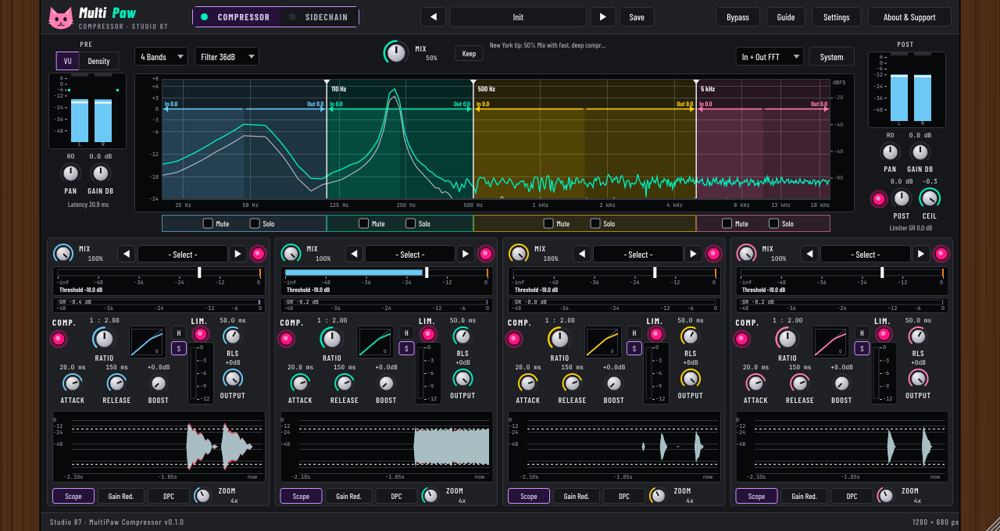
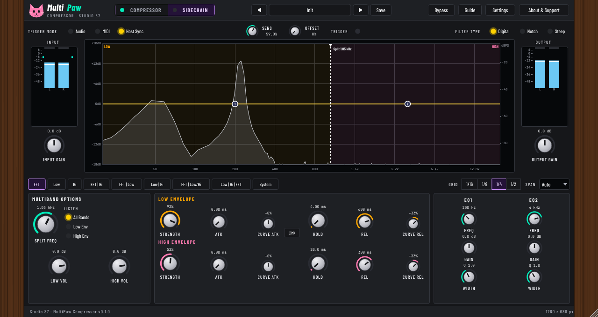

MultiPaw Compressor
Manual for version 0.1.0. Studio 87. Free and open source (AGPL-3.0-or-later). Collects nothing, never uses the network.
A four-band compressor with linear-phase crossovers, a per-band limiter and dynamic pattern curves (DPC), plus a two-band sidechain page for pumping and ducking.
Quick start
- Put MultiPaw on a track. Choose how many bands (1 to 4) and drag the crossover lines in the big display.
- Pull a band's Threshold slider left until the gain reduction bar moves. Ratio, Attack and Release shape the feel.
- Compare with Bypass (B). The dry signal is delayed to match, so level jumps are only from the processing.
- For parallel compression lower the band or master Mix. Press P to flip to the Sidechain page.
Page 1: Compressor

| Control | What it does | Range | Default |
|---|---|---|---|
| VU | VU meter: smoothed level (RMS, 300 ms feel) with a thin peak tick. | 0 to 1 | 0 |
| Density | Density meter: the pale bar is the peak, the solid bar is the average level. The gap between them shows how dense (squashed) the sound is. | 0 to 1 | 0 |
| Pan | Input pan: balance of the left and right channel before the compressor. Double-click for centre. | -100 to 100 | 0 |
| Gain dB | Input gain in dB before the compressor. Range -24 to +24 dB. Double-click for 0. | -24 to 24 | 0 |
| 1 Band2 Bands3 Bands4 Bands | Number of bands: 1 to 4. Drag the vertical dividers in the graph to place the crossovers. Unused bands are greyed out. | 1 to 4 | 4 |
| Filter 6dBFilter 12dBFilter 24dBFilter 36dBFilter 48dBFilter 60dBFilter 72dBFilter 84dBFilter 96dB | Crossover slope: how steeply the bands are separated, from 6 dB per octave (gentle) to 96 dB per octave (very steep). Default 36. Steeper slopes keep bands cleaner but use more CPU and ring slightly more. Linkwitz-Riley type, so the bands add back flat. | 0 to 8 | 3 |
| Mix | Main Mix: dry against compressed, for parallel ("New York") compression. 100% is fully compressed. 50% is our default: it keeps the punch of the original and adds the weight of the squashed copy. The dry copy is time aligned. | 0 to 100 | 50 |
| FFT offIn + Out FFTInput FFTOutput FFT | Spectrum overlay behind the bands. In + Out shows the input in grey and the output in green. Scale on the right is dBFS. | 0 to 3 | 1 |
| Pan | Output pan after the bands are mixed. Double-click for centre. | -100 to 100 | 0 |
| Gain dB | Output Gain in dB, after the main Mix and before the master limiter, so you can push the sound into the limiter for loudness. Range -24 to +24 dB. | -24 to 24 | 0 |
| m.limOn | Master output limiter on or off. | 0 to 1 | 1 |
| Post | Post limiter gain: a final gain after the master limiter, -12 to +12 dB. Raising it can push the output above the ceiling. | -12 to 12 | 0 |
| Ceil | Master limiter ceiling in dB. Nothing leaves the plugin above this level (the sound is delayed by the lookahead so peaks are caught in time). Range -12 to 0 dB. | -12 to 0 | -0.3 |
| Mix | Band Mix: dry against compressed for this band only. 100% is fully compressed. | 0 to 100 | 100 |
| b0.on | Band power: off lets the band pass unprocessed (it still goes through the crossover). | 0 to 1 | 1 |
| b0.cOn | Compressor on or off for this band. | 0 to 1 | 1 |
| Ratio | Compression ratio from 1:1 (nothing) to 1:inf (limiting). Level above the threshold is reduced by this ratio. With "Ratio in steps" in System it snaps to whole numbers (1:1, 2:1, 3:1 and so on). | 0 to 1 | 0.5 |
| Attack | Attack: how fast the compressor reacts when the level goes over the threshold. Slow lets the front of a kick through (punch), fast squashes it. 0.1 ms to 100 ms. | 0.1 to 100 | 20 |
| Release | Release: how fast the compressor lets go. Below 1 ms it switches to AUTO: the time follows the signal (longer after deep compression). 0.5 ms (AUTO) to 1000 ms. | 0.5 to 1000 | 150 |
| Boost | Boost: make-up gain after the compressor, 0 to +24 dB. It pushes into the band limiter. With Autogain in System, extra make-up is added for you. | 0 to 24 | 0 |
| b0.lOn | Band limiter on or off. A lookahead limiter at the end of the band: nothing from this band goes above its Output level. | 0 to 1 | 1 |
| Rls | Limiter release: how fast the limiter lets go. Below 1 ms it switches to AUTO (program dependent: longer after deep limiting). 0.5 ms (AUTO) to 1000 ms. | 0.5 to 1000 | 50 |
| Output | Limiter output: the ceiling for this band in dB, -12 to 0. Together with Boost this is how loud the band gets. | -12 to 0 | 0 |
| Zoom | Zoom the time axis of the Scope and Gain Red. views, 1x to 8x. | 0 to 1 | 0.4 |
| cheekL | Double-click the wood to reset the window to 100%. | ||
| MultiPawCompressor · Studio 87 | MultiPaw Compressor by Studio 87: one plugin, two pages. | ||
| Compressor | Page 1: Multiband Compressor. Up to four bands, each with its own compressor, limiter and dynamic pattern. The small lamp shows if this page is processing sound. Press P to flip pages. | ||
| pwA | Compressor page processing on or off. Click the lamp to switch it. | ||
| Sidechain | Page 2: Multiband Sidechain. Pumping and ducking for a low and a high band, triggered by audio, MIDI or the host beat. The small lamp shows if this page is processing sound. Press P to flip pages. | ||
| pwB | Sidechain page processing on or off. Click the lamp to switch it. It starts off so the sidechain does not pump until you want it. | ||
| ◀ | Previous preset of this page. | ||
| Trance Master 2 | Open the preset browser for this page. Double-click to rename your own presets. | ||
| ▶ | Next preset of this page. | ||
| Save | Save these settings as your own preset. Asks before overwriting. | ||
| Bypass | Bypass (B): hear the dry signal, delayed to match, to compare with the processed sound. The meters keep moving. | ||
| Guide | Short guide, what is verified and what is our own choice, and keyboard shortcuts. | ||
| Settings | Info bubbles, power saving, colour look. | ||
| About & Support | About, support and where your files live. | ||
| Latency 15.0 ms | Latency reported to the host: the lookahead of the band limiters plus the master limiter. Change it in System. | ||
| Keep | Keep Mix: when on, loading a preset leaves the Mix knob where you put it, so you can compare presets at the same Mix. When off, each preset sets its own Mix (Trance Master 2 uses 75%, Bass Tight 100%). | ||
| New York tip: 50% Mix with fast, deep compression | New York compression: blend a heavily squashed copy under the untouched sound. Try low thresholds, ratio 6:1 or more, fast attack, and Mix around 30 to 50%. | ||
| System | System page: ECO, lookahead, local readouts, autogain, ratio in steps and detector. | ||
| Mute | Mute this band: its sound is removed from the output. | ||
| Solo | Solo this band: hear only soloed bands. | ||
| M | Mute this band: its sound is removed from the output. | ||
| S | Solo this band: hear only soloed bands. | ||
| Lim | Master output limiter on or off. A lookahead limiter on the summed output. Needs Latency as shown on the left. | ||
| Limiter GR -0.7 dB | Master limiter gain reduction right now, in dB. | ||
| ◀ | Previous band preset: a compressor and limiter setup for this band only. | ||
| - Select - | Band preset: click to pick a ready-made setting for this band only (it changes this band's compressor and limiter, nothing else). | ||
| ▶ | Next band preset. | ||
| H | Hard knee: the ratio starts exactly at the threshold. More obvious, punchier. | ||
| S | Soft knee: eases into the ratio over 6 dB around the threshold. Smoother, less obvious. | ||
| Scope | Scope view: red is the original band, green the compressed band, grey where they overlap, as a waveform shape in dB. | ||
| Gain Red. | Gain reduction view: how much this band was turned down over the last seconds, in dB. | ||
| DPC | Dynamic Pattern Compressor: edit the beat-synced gain pattern for this band. | ||
| ▶ Play | Start or stop the preview sound (Space). The meters and displays move even when it is stopped. | ||
| Full mix loopHardstyle kick + offbeat bassSupersaw leadDrum | Test sound for the preview rig. | ||
| Load file | Load your own audio file for the preview. Nothing is uploaded; it is decoded in this page only. | ||
| Trigger feed Kick trackSame signal | Sidechain feed for page 2 in Audio mode. Kick track: a separate kick plays the trigger, as if a kick track was routed in. Same signal: the sound itself triggers the pumping. | ||
| Level QuietLoudMastered | Preview level (preview only). The factory presets are made for loud, near-mastered material, so the quiet test sounds barely touch them. Quiet: as generated. Loud: up to 6 dB hotter, peaks kept at -1 dB. Mastered: peaks at -0.5 dB, like a finished track. No level ever clips the rig or tickles the master limiter on its own, so 0% Mix is the untouched sound. The Input gain knob of the plugin does the same job on your own music. | ||
| Level match | Level match (preview only): the compressed sound is turned up or down to the same average loudness as the dry sound, so A/B (B key) compares density, punch and sustain instead of volume. Uses a 0.5 s average. Loops play at 150 BPM; Host Sync and DPC follow that transport. | ||
| Comp vs Dry RMS +0.5 dB Crest 9.1 to 10.7 dB -1.6 LU at e | Live comparison of the compressor page against the dry input (after input gain), averaged over about half a second. RMS: average level change in dB. Crest: peak minus RMS, dry then compressed. LU at equal peak: how much louder the compressed sound can be played before its peak reaches the dry peak (dry crest minus compressed crest). Mix, autogain and Level match all show up here. | ||
| Preview rig, not plugin | This strip only exists in the design mockup. The plugin itself has no preview rig. | ||
| cheekR | Double-click the wood to reset the window to 100%. |
Page 2: Sidechain

| Control | What it does | Range | Default |
|---|---|---|---|
| Audio | Audio: the sidechain signal (after the EQ below) triggers the envelope when it passes the Sens level, like a kick on a sidechain input. | 0 to 2 | 2 |
| MIDI | MIDI: each MIDI note-on triggers the envelope. In the preview rig the kick pattern plays the role of the MIDI notes. | 0 to 2 | 2 |
| Host Sync | Host Sync: the envelope restarts on the beat grid of the host transport (grid and offset below). No audio needed. Our rig runs at 150 BPM. | 0 to 2 | 2 |
| Sens | Trigger sensitivity for Audio mode, 0 to 100%. Higher means a quieter signal triggers (threshold from -6 dBFS at 0% down to -60 dBFS at 100%). Our scale. | 0 to 100 | 59 |
| Offset | Host Sync offset: shifts the trigger inside the grid step. 50% on the 1/4 grid gives the classic offbeat pump. Our addition. | 0 to 1 | 0 |
| Digital | Digital: the two EQ points are normal peaking filters on the trigger signal. Our interpretation. | 0 to 2 | 0 |
| Notch | Notch: each EQ point cuts a narrow notch instead (its depth follows the gain value). Use it to remove a frequency from the trigger. Our interpretation. | 0 to 2 | 0 |
| Steep | Steep: each EQ point is doubled for twice the dB and a steeper edge. Our interpretation. | 0 to 2 | 0 |
| Input Gain | Input gain in dB for the trigger signal and the audio. Range -24 to +24 dB. | -24 to 24 | 0 |
| Output Gain | Output gain in dB after the ducking. Range -24 to +24 dB. | -24 to 24 | 0 |
| 1/16 | Beat grid 1/16: lines and snapping every 1/16 note. In Host Sync it is also the trigger rate (our choice). | 0 to 3 | 2 |
| 1/8 | Beat grid 1/8. | 0 to 3 | 2 |
| 1/4 | Beat grid 1/4: one line per beat. In Host Sync the envelope restarts every beat. | 0 to 3 | 2 |
| 1/2 | Beat grid 1/2: every two beats. | 0 to 3 | 2 |
| Auto1 beat2 beats4 beats | Time shown in the envelope displays. Auto picks the smallest span that fits the envelope. At 150 BPM one beat is 400 ms. | 0 to 3 | 0 |
| Split Freq | Split frequency between the low band and the high band (Linkwitz-Riley, 24 dB per octave). Everything below is ducked by the Low Envelope, everything above by the High Envelope. Also draggable in the spectrum. | 50 to 8000 | 1050 |
| All Bands | Hear both bands (normal). | 0 to 2 | 0 |
| Low Env | Hear only the low band, to tune its envelope. | 0 to 2 | 0 |
| High Env | Hear only the high band, to tune its envelope. | 0 to 2 | 0 |
| Low Vol | Level of the low band after ducking, -24 to +6 dB. | -24 to 6 | 0 |
| High Vol | Level of the high band after ducking, -24 to +6 dB. | -24 to 6 | 0 |
| Strength | Strength: how deep the band is ducked at the trigger. 100% goes to silence, 50% to half the level. | 0 to 100 | 92 |
| Atk | Attack time: how long the band takes to go down after the trigger. 0 ms is instant (we ramp over a fraction of a millisecond to avoid clicks). | 0 to 200 | 0 |
| Curve Atk | Attack curve: bends the attack. Above 0 it ducks quickly at first, below 0 it ducks slowly at first. | -100 to 100 | 0 |
| Hold | Hold: how long the band stays fully ducked before it recovers. | 0 to 2000 | 4 |
| Rel | Release time: how long the band takes to come back to full level. | 1 to 4000 | 600 |
| Curve Rel | Release curve: bends the recovery. Above 0 it comes back quickly at first and eases in at the end, below 0 it stays down longer and snaps back. | -100 to 100 | 33 |
| Freq | EQ1 frequency on the trigger signal. Also draggable as a point in the spectrum. | 20 to 20000 | 200 |
| Gain | EQ1 gain on the trigger signal, -18 to +18 dB. Boost a frequency to make the trigger react to it more, cut one to ignore it. The audio itself is not changed. | -18 to 18 | 0 |
| Width | EQ1 width as Q: low numbers are wide, high numbers are narrow. 0.2 to 12. Scroll over the point in the spectrum to change it. | 0.2 to 12 | 1 |
| Freq | EQ2 frequency on the trigger signal. Also draggable as a point in the spectrum. | 20 to 20000 | 4000 |
| Gain | EQ2 gain on the trigger signal, -18 to +18 dB. Boost a frequency to make the trigger react to it more, cut one to ignore it. The audio itself is not changed. | -18 to 18 | 0 |
| Width | EQ2 width as Q: low numbers are wide, high numbers are narrow. 0.2 to 12. Scroll over the point in the spectrum to change it. | 0.2 to 12 | 1 |
| cheekL | Double-click the wood to reset the window to 100%. | ||
| MultiPawCompressor · Studio 87 | MultiPaw Compressor by Studio 87: one plugin, two pages. | ||
| Compressor | Page 1: Multiband Compressor. Up to four bands, each with its own compressor, limiter and dynamic pattern. The small lamp shows if this page is processing sound. Press P to flip pages. | ||
| pwA | Compressor page processing on or off. Click the lamp to switch it. | ||
| Sidechain | Page 2: Multiband Sidechain. Pumping and ducking for a low and a high band, triggered by audio, MIDI or the host beat. The small lamp shows if this page is processing sound. Press P to flip pages. | ||
| pwB | Sidechain page processing on or off. Click the lamp to switch it. It starts off so the sidechain does not pump until you want it. | ||
| ◀ | Previous preset of this page. | ||
| Offbeat Pumper | Open the preset browser for this page. Double-click to rename your own presets. | ||
| ▶ | Next preset of this page. | ||
| Save | Save these settings as your own preset. Asks before overwriting. | ||
| Bypass | Bypass (B): hear the dry signal, delayed to match, to compare with the processed sound. The meters keep moving. | ||
| Guide | Short guide, what is verified and what is our own choice, and keyboard shortcuts. | ||
| Settings | Info bubbles, power saving, colour look. | ||
| About & Support | About, support and where your files live. | ||
| FFT | Show only the spectrum and EQ. | ||
| Low | Show only the low band envelope. | ||
| Hi | Show only the high band envelope. | ||
| FFT | Hi | Spectrum and high envelope side by side. | ||
| FFT | Low | Spectrum and low envelope side by side. | ||
| Low | Hi | Low and high envelope side by side. | ||
| FFT | Low/Hi | Spectrum on the left, low envelope over high envelope on the right. | ||
| Low | Hi | FFT | Low, high and spectrum in three columns. | ||
| System | System view: trigger monitor and status. | ||
| Link | Link: low and high envelopes move together. Turning a knob on one copies the value to the other. | ||
| ▶ Play | Start or stop the preview sound (Space). The meters and displays move even when it is stopped. | ||
| Full mix loopHardstyle kick + offbeat bassSupersaw leadDrum | Test sound for the preview rig. | ||
| Load file | Load your own audio file for the preview. Nothing is uploaded; it is decoded in this page only. | ||
| Trigger feed Kick trackSame signal | Sidechain feed for page 2 in Audio mode. Kick track: a separate kick plays the trigger, as if a kick track was routed in. Same signal: the sound itself triggers the pumping. | ||
| Level QuietLoudMastered | Preview level (preview only). The factory presets are made for loud, near-mastered material, so the quiet test sounds barely touch them. Quiet: as generated. Loud: up to 6 dB hotter, peaks kept at -1 dB. Mastered: peaks at -0.5 dB, like a finished track. No level ever clips the rig or tickles the master limiter on its own, so 0% Mix is the untouched sound. The Input gain knob of the plugin does the same job on your own music. | ||
| Level match | Level match (preview only): the compressed sound is turned up or down to the same average loudness as the dry sound, so A/B (B key) compares density, punch and sustain instead of volume. Uses a 0.5 s average. Loops play at 150 BPM; Host Sync and DPC follow that transport. | ||
| Comp vs Dry RMS +0.1 dB Crest 9.6 to 10.8 dB -1.2 LU at e | Live comparison of the compressor page against the dry input (after input gain), averaged over about half a second. RMS: average level change in dB. Crest: peak minus RMS, dry then compressed. LU at equal peak: how much louder the compressed sound can be played before its peak reaches the dry peak (dry crest minus compressed crest). Mix, autogain and Level match all show up here. | ||
| Preview rig, not plugin | This strip only exists in the design mockup. The plugin itself has no preview rig. | ||
| cheekR | Double-click the wood to reset the window to 100%. |
Latency
With linear-phase crossovers on, the plugin reports its latency to the host; it depends on the Filter slope setting (shown under the Pre meter). Turn linear phase off in System for the lowest latency with classic Linkwitz-Riley crossovers. The limiter lookahead adds to it.
Keyboard and mouse
| B | Bypass on or off |
| P | Flip between the compressor and sidechain pages |
| Knobs | Drag up or down, mouse wheel. Hold Shift for fine steps. Double-click to reset. |
| Window | Drag a corner; it keeps its proportions. |
Install and uninstall
- Linux: unpack the zip, run
install.sh(copies the VST3 to~/.vst3).uninstall.shremoves it. - Windows: run the installer. It adds an uninstaller. Close your DAW first.
- macOS: open the package. The build is not notarised, so macOS may ask you to allow it in System Settings, Privacy and Security.
After installing, rescan plugins in your host.
Licence and thanks
AGPL-3.0-or-later. Built with JUCE (AGPLv3). Fonts: Barlow Condensed and JetBrains Mono, SIL Open Font Licence 1.1. Source: github.com/SpeakingColors/multipawcompressor.